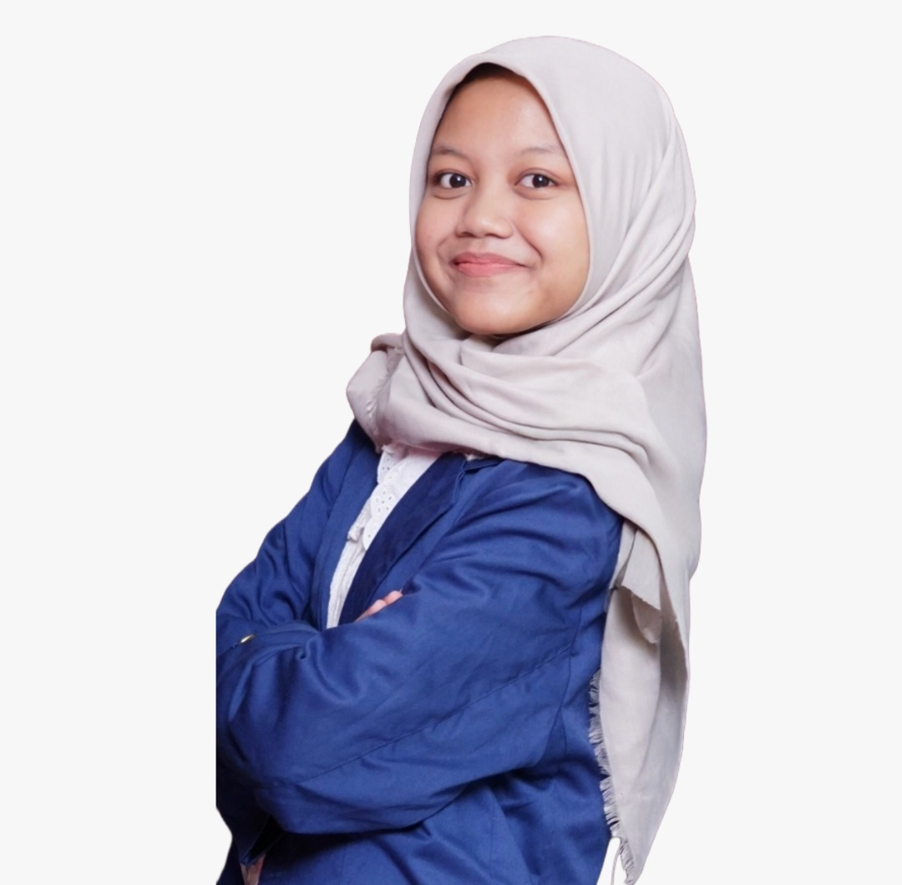

Home
My Profile

HELLO EVERYBODY, I AM
Faizaturrahmah Baity
Mahasiswa Institut Teknologi Sepuluh Nopember
Saya Faizaturrahmah Baity, Mahasiswa tahun pertama Teknik Informatika ITS yang aktif berkecimpung di dunia kepanitiaan dan organisasi sejak SMA. Berpengalaman mengelola kegiatan berskala besar mulai dari koordinasi lintas divisi, mengelola komunikasi dengan pihak eksternal, manajemen peserta, hingga produksi konten visual. Terbiasa bekerja dalam ritme cepat dan senang mengambil inisiatif ketika ada yang perlu diselesaikan.
Experience
Work Profile
Pengalaman Bekerja
INI LHO ITS × IMARAYA
Staff Divisi Event-TryOutNovember 2025 – Januari 2026
Malang, Jawa Timur
- Menyusun konsep kegiatan dan guidebook TOSN, membawakan sesi coaching subtes Logika yang diikuti oleh 20 peserta, dan mengelola pelaksanaan, rekap hasil, dan evaluasi kegiatan TOSN.
ITS CAMP 2026
Staff Data CenterJuni – Agustus 2026
Surabaya, Jawa Timur
- Mengelola rekapitulasi data dan kebutuhan administrasi dari 5 unit (85 peserta) ITS CAMP 2026. Dan mengelola operasional data dalam hal penugasan, distribusi data, hingga kebutuhan lainnya.
Minat / Ketertarikan / Kemampuan lainnya
- Kemampuan dalam bidang teknologi: Google Workspace, Microsoft Office (Excel, Word, PowerPoint), Design (Affinity, Figma), Database Management (MySQL)
- Kemampuan Bahasa: Bahasa Indonesia (fasih), Bahasa Inggris (B2-upper intermediate)
- Ketertarikan: Web Development, UI/UX, Cyber Security